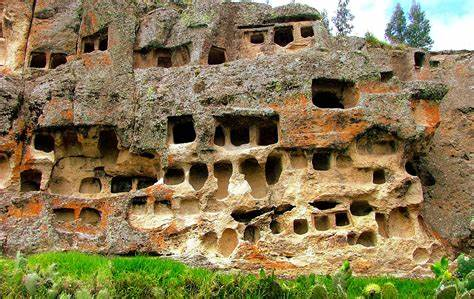
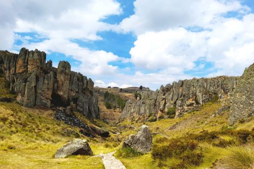
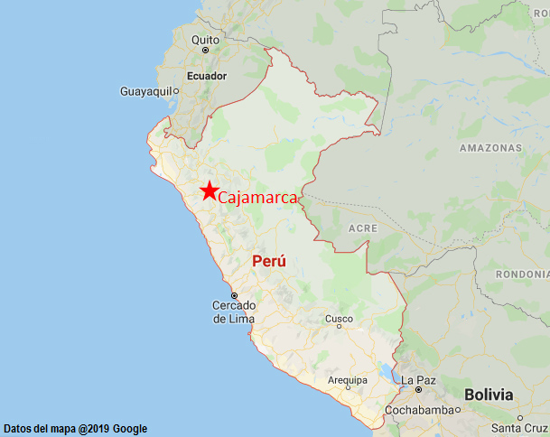

Antiguedad del departamento
El departamento de Cajamarca, ubicado en el norte de Perú, es una región con una rica historia que se remonta a tiempos ancestrales. Antes de la llegada de los españoles en el siglo XVI, esta área estaba habitada por diversas culturas, entre las que destacan los Cajamarcas, los Wankas y los Huaylas. Estos pueblos dejaron un legado cultural significativo en la zona, evidenciado por la presencia de complejos arqueológicos como Cumbemayo y Kuntur Wasi, que muestran la habilidad y el conocimiento técnico de sus constructores.
La fundación de la ciudad de Cajamarca se atribuye a los incas, quienes la establecieron como un importante centro administrativo y religioso en la región. Sin embargo, su verdadera notoriedad histórica se produjo en 1532, cuando el Inca Atahualpa fue capturado por los conquistadores españoles liderados por Francisco Pizarro en la Plaza de Armas de Cajamarca. Este evento marcó el inicio de la conquista española en el Perú y tuvo repercusiones significativas en la historia posterior de la región. A lo largo de los siglos
 |
Rasgo mas importante de cajamrca
Los paisajes naturales se erigen como el rasgo más prominente de Cajamarca debido a su profundo impacto en la identidad y la experiencia de quienes la visitan. La diversidad geográfica de esta región del norte de Perú, que abarca desde majestuosas montañas hasta fértiles valles y lagunas cristalinas, no solo ofrece una belleza escénica incomparable, sino que también proporciona un refugio para una variedad única de vida silvestre y una fuente vital de recursos naturales para las comunidades locales. Estos paisajes no solo son impresionantes por su magnificencia visual, sino que también son portadores de una historia geológica fascinante y han sido testigos de eventos significativos a lo largo del tiempo. Además, sirven como espacios de recreación, contemplación y conexión con la naturaleza, proporcionando un escape rejuvenecedor del bullicio de la vida moderna y una oportunidad para reconectar con lo esencial. Así, los paisajes naturales se erigen como el alma de Cajamarca, nutriendo su identidad, inspirando a sus habitantes y cautivando a quienes tienen el privilegio de explorarlos.
 |
Rutas desde lima
Tiempo: El vuelo directo desde Lima a Cajamarca tiene una duración aproximada de 1 hora y 20 minutos.
Precio: Los precios de los vuelos pueden variar dependiendo de la temporada y la aerolínea, pero generalmente pueden rondar entre los 100 a 200 USD por trayecto, aproximadamente.
Tiempo: El viaje en bus desde Lima a Cajamarca puede tomar alrededor de 15 a 18 horas, dependiendo de las condiciones del tráfico y las paradas que realice el bus.
Precio: Los precios de los pasajes de bus pueden variar según la empresa y el tipo de servicio, pero estimativamente podrían estar entre los 40 a 80 USD por trayecto, aproximadamente.
Tiempo: Esta opción no es recomendable debido a la gran distancia entre Lima y Cajamarca. A pie, tardarías varios días o semanas, dependiendo de tu velocidad y resistencia física, pero se estima que serian de 12 a 15 dias.
Costo: Este método sería el más económico en términos de dinero directo, pero requeriría de una planificación extrema y equipo especializado para largas caminatas.
 |